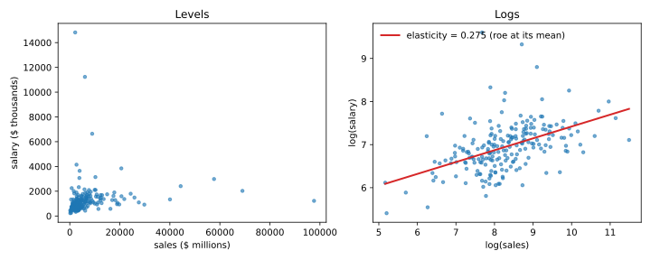

Articles · Econometrics
Linear Regression: A Gentle Introduction with Applications to Finance
A linear regression returns a list of numbers. Each one answers a precise question, but which question depends on how the variables enter the model: in levels, in logs, or a mix of the two. This article works through that on a classic cross-section, the CEO salary data used in Wooldridge's Introductory Econometrics. It covers 209 U.S. CEOs in 1990, with their salary, their firm's sales and its return on equity (ROE).
All estimates are computed from scratch with NumPy: no regression package, just the formula.
The model
The multiple linear regression model relates a dependent variable \(y\) to \(k\) explanatory variables and an error term \(u\) that collects everything the model leaves out:
$$y = \beta_0 + \beta_1 x_1 + \beta_2 x_2 + \dots + \beta_k x_k + u .$$Ordinary least squares (OLS) chooses the coefficients that minimise the sum of squared residuals. In matrix form the solution is
$$\hat{\boldsymbol\beta} = (\mathbf X'\mathbf X)^{-1}\mathbf X'\mathbf y .$$Its variance is estimated from the residuals \(\hat u_i\), with \(n\) observations and \(k\) slopes; the standard errors are the square roots of the diagonal, and each \(t\)-statistic is \(\hat\beta_j / \mathrm{se}(\hat\beta_j)\):
$$\widehat{\mathrm{Var}}(\hat{\boldsymbol\beta}) = \hat\sigma^2(\mathbf X'\mathbf X)^{-1}, \qquad \hat\sigma^2 = \frac{1}{n-k-1}\sum_{i=1}^n \hat u_i^2 .$$Each slope is a ceteris paribus effect: the change in \(y\) when \(x_j\) moves and the other regressors stay fixed. That reading requires the zero conditional mean assumption, \(\mathbb E[u \mid x_1,\dots,x_k] = 0\): the unobserved factors must be unrelated, on average, to the regressors.
Logarithms change the unit in which the answer is expressed:
| Model | Equation | Meaning of \(\beta_1\) |
|---|---|---|
| Level–level | \(y = \beta_0 + \beta_1 x\) | \(\Delta y = \beta_1\,\Delta x\) |
| Log–level | \(\log y = \beta_0 + \beta_1 x\) | \(\%\Delta y \approx 100\,\beta_1\,\Delta x\) |
| Level–log | \(y = \beta_0 + \beta_1 \log x\) | \(\Delta y \approx (\beta_1/100)\,\%\Delta x\) |
| Log–log | \(\log y = \beta_0 + \beta_1 \log x\) | \(\%\Delta y \approx \beta_1\,\%\Delta x\) (elasticity) |
OLS from scratch
The function below builds the design matrix, solves the normal equations and returns the coefficients, their standard errors, \(t\)-statistics and the \(R^2\). The data come from the wooldridge Python package (pip install wooldridge).
import numpy as np
import wooldridge as woo
ceo = woo.data("ceosal1")
salary = ceo["salary"].to_numpy(float) # $ thousands
sales = ceo["sales"].to_numpy(float) # $ millions
roe = ceo["roe"].to_numpy(float) # percent
def ols(y, *regressors):
X = np.column_stack([np.ones(len(y)), *regressors])
n, k = X.shape
XtX_inv = np.linalg.inv(X.T @ X)
b = XtX_inv @ X.T @ y # (X'X)^-1 X'y
u = y - X @ b # residuals
s2 = (u @ u) / (n - k) # error variance estimate
se = np.sqrt(s2 * np.diag(XtX_inv))
r2 = 1 - (u @ u) / ((y - y.mean()) @ (y - y.mean()))
return b, b / se, r2
b, t, r2 = ols(salary, roe)
print(f"salary = {b[0]:.1f} + {b[1]:.2f} roe (t = {t[1]:.1f}, R2 = {r2:.3f})")salary = 963.2 + 18.50 roe (t = 1.7, R2 = 0.013)
Four readings of the same data
In levels, one extra point of ROE goes with $18,501 more salary. With \(t = 1.7\), the estimate is not significant at the 5% level: in levels, a few very high salaries make it imprecise. The \(R^2\) is only 1.3%. A low \(R^2\) alone would not make a slope unreliable; it says that most of the variation in pay comes from factors other than ROE.
Salaries and sales are strongly right-skewed: a handful of very large values dominate the levels. Taking logs turns multiplicative relationships into linear ones and changes what the slope means. The loop below estimates the four forms of the table above.
models = {
"level-level": (salary, roe),
"log-level": (np.log(salary), roe),
"level-log": (salary, np.log(sales)),
"log-log": (np.log(salary), np.log(sales)),
}
for name, (y, x) in models.items():
b, t, r2 = ols(y, x)
print(f"{name:12s} b1 = {b[1]:9.4f} t = {t[1]:4.1f} R2 = {r2:.3f}")
b, t, r2 = ols(np.log(salary), np.log(sales), roe)
print(f"\nlog(salary) = {b[0]:.3f} + {b[1]:.3f} log(sales) + {b[2]:.4f} roe")
print(f"t-stats: log(sales) {t[1]:.1f}, roe {t[2]:.1f} R2 = {r2:.2f}")level-level b1 = 18.5012 t = 1.7 R2 = 0.013 log-level b1 = 0.0139 t = 3.1 R2 = 0.043 level-log b1 = 262.9014 t = 2.8 R2 = 0.038 log-log b1 = 0.2567 t = 7.4 R2 = 0.211 log(salary) = 4.362 + 0.275 log(sales) + 0.0179 roe t-stats: log(sales) 8.3, roe 4.5 R2 = 0.28
Applying the reading rules row by row:
- Level–level: +1 point of ROE → +$18,501 of salary.
- Log–level: +1 point of ROE → about +1.39% of salary. The approximation is good for small coefficients: the exact change is \(100\,(e^{0.0139}-1) = 1.40\%\).
- Level–log: +1% of sales → \(262.9/100 \approx\) $2,629 of salary.
- Log–log: +1% of sales → +0.257% of salary. This is an elasticity.
The \(R^2\) values cannot be compared across these rows. Explaining salary and explaining log(salary) are different tasks, so a higher \(R^2\) in logs does not by itself mean a better model.
The last regression puts both variables in one model. Now each coefficient is read holding the other fixed. Among firms with the same ROE, 1% more sales goes with 0.275% more pay (an elasticity). Among firms with the same sales, one extra point of ROE goes with about 1.8% more pay (a semi-elasticity). As a worked example, a CEO whose firm has 20% more sales and 5 more points of ROE is predicted to earn
$$\Delta\log(\text{salary}) = 0.275\cdot\log(1.20) + 0.0179\cdot 5 = 0.140 ,$$that is, about 15% more.
Units of measurement
Coefficients carry the units of the variables, so changing units changes the numbers. It cannot change what the data say. The loop below re-estimates the same regressions with salary in dollars instead of thousands, and with ROE as a decimal instead of a percentage.
units = {
"salary ($000) on roe (%)": (salary, roe),
"salary ($) on roe (%)": (1000 * salary, roe),
"salary ($000) on roe (decimal)": (salary, roe / 100),
"log salary ($000) on log sales": (np.log(salary), np.log(sales)),
"log salary ($) on log sales": (np.log(1000 * salary), np.log(sales)),
}
print(f"{'':31s}{'b0':>11s}{'b1':>11s}{'t':>6s}{'R2':>8s}")
for name, (y, x) in units.items():
bu, tu, r2u = ols(y, x)
print(f"{name:31s}{bu[0]:11.3f}{bu[1]:11.4f}{tu[1]:6.2f}{r2u:8.4f}")b0 b1 t R2 salary ($000) on roe (%) 963.191 18.5012 1.66 0.0132 salary ($) on roe (%) 963191.336 18501.1863 1.66 0.0132 salary ($000) on roe (decimal) 963.191 1850.1186 1.66 0.0132 log salary ($000) on log sales 4.822 0.2567 7.44 0.2108 log salary ($) on log sales 11.730 0.2567 7.44 0.2108
In levels, measuring salary in dollars multiplies both coefficients by 1,000, and measuring ROE as a decimal multiplies the slope by 100. The \(t\)-statistic and the \(R^2\) do not move. In logs, a change in the units of salary only shifts the intercept, by \(\log(1000) = 6.91\): the elasticity is unit-free, one more reason to work in logs.
Back to dollars
The log model predicts \(\log(\text{salary})\), but what we usually want is salary in dollars. Exponentiating the fitted value is not enough, because the exponential of the error does not average to one:
$$\mathbb E[y \mid \mathbf x] = \exp(\mathbf x'\boldsymbol\beta)\,\mathbb E[e^{u}], \qquad \mathbb E[e^{u}] > 1 .$$If \(u\) is independent of the regressors, the missing factor can be estimated by Duan's smearing estimator, the average of the exponentiated residuals:
$$\hat\alpha_0 = \frac{1}{n}\sum_{i=1}^n e^{\hat u_i}, \qquad \hat y = \hat\alpha_0 \exp\bigl(\widehat{\log y}\bigr).$$b, t, r2 = ols(np.log(salary), np.log(sales), roe)
X = np.column_stack([np.ones(len(salary)), np.log(sales), roe])
log_fit = X @ b
u = np.log(salary) - log_fit
alpha0 = np.mean(np.exp(u)) # Duan's smearing factor
naive = np.exp(log_fit)
print(f"smearing factor: {alpha0:.3f}")
print(f"average salary: actual {salary.mean():.0f}, naive {naive.mean():.0f}, "
f"corrected {alpha0 * naive.mean():.0f}")
x_new = np.array([1, np.log(5000), 20]) # sales $5,000m, roe 20%
print(f"CEO with sales $5,000m, roe 20%: naive {np.exp(x_new @ b):.0f}, "
f"corrected {alpha0 * np.exp(x_new @ b):.0f}")smearing factor: 1.185 average salary: actual 1281, naive 1093, corrected 1295 CEO with sales $5,000m, roe 20%: naive 1167, corrected 1383
Simply exponentiating the fitted values predicts an average salary of $1,093k against an actual $1,281k, about 15% too low. With the smearing factor of 1.185, the average prediction is $1,295k. For a CEO of a firm with $5,000 million in sales and a 20% ROE, the prediction rises from $1,167k to $1,383k.
Why logs
The plot makes the case for logs visible. In levels, most CEOs are squeezed into a corner and a few extreme salaries set the scale. In logs, the cloud spreads out and the relationship is close to linear.
import matplotlib.pyplot as plt
fig, (ax1, ax2) = plt.subplots(1, 2, figsize=(10, 4))
ax1.scatter(sales, salary, s=12, alpha=0.6)
ax1.set(xlabel="sales ($ millions)", ylabel="salary ($ thousands)", title="Levels")
ax2.scatter(np.log(sales), np.log(salary), s=12, alpha=0.6)
xs = np.linspace(np.log(sales).min(), np.log(sales).max(), 50)
ax2.plot(xs, b[0] + b[1] * xs + b[2] * roe.mean(), color="C3", lw=2,
label=f"elasticity = {b[1]:.3f} (roe at its mean)")
ax2.set(xlabel="log(sales)", ylabel="log(salary)", title="Logs")
ax2.legend(frameon=False, loc="upper left")
plt.tight_layout()
plt.show()
Takeaways
- A coefficient is a ceteris paribus effect only if the unobserved factors are unrelated to the regressors.
- The functional form sets the unit of the answer: dollars per point, percent per point, dollars per percent, or percent per percent.
- Logs suit skewed, multiplicative variables such as pay and firm size, and turn slopes into elasticities. Elasticities do not depend on units.
- To get back to dollars from a log model, correct the prediction: \(\exp(\widehat{\log y})\) underpredicts salary by about 15%, and the smearing factor fixes it.
- \(R^2\) measures fit, not validity, and cannot be compared across different dependent variables.
Reference: J. M. Wooldridge, Introductory Econometrics: A Modern Approach, 7th ed., Cengage, 2020. Data: CEOSAL1.